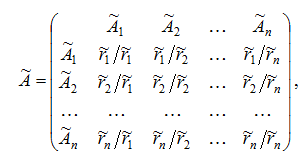
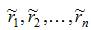

Розрахунок нових коефіціентів
Для побудови графіка індекса необхідно розрахувати нові вагові коефіціенти для значеннь компонент.
Розрахунок відбувається за даними отриманими при побудові матриці попарних порівнянь.

Схема розрахунку:
- Для кожного рядка порахованих елементів матриці  рахуємо середнє геометричне за формулою;
- Сумуємо усі середні геометричні;
- Для кожного рядка матриці, рахуємо відношення середнього геометричного до суми середніх геометричних;
- Дані відношення і є новими коефіціентами для розрахунку значеннь індексу.